Albumes
 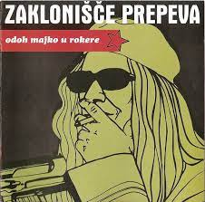
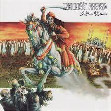
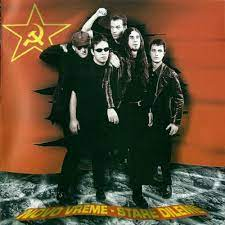
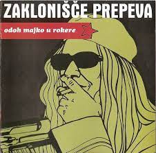
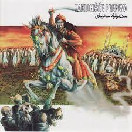
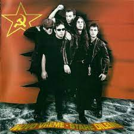
Escuchar
-
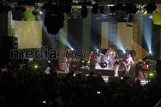

Zaklonišče Prepeva ( Canto de refugio antiaéreo ) es una banda de rock eslovena de Nova Gorica . La mayoría de sus letras están en serbocroata con cierta cantidad de yugo-nostalgia . Zaklonišče Prepeva en concierto Publicaron su primer álbum, Nešto kao Džimi Hendrix (Algo como Jimi Hendrix ) en 1996. Su tercer álbum, Glasajte za nas (Vote for us), fue controvertido ya que el video de televisión de la canción Vote for us fue prohibido antes de las elecciones eslovenas de 2000. El razonamiento fue que su candidato ficticio, Kradimir Pendreković (Thief Nightstick) podría haber se parecía a algunos candidatos reales.
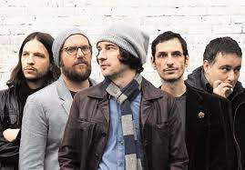
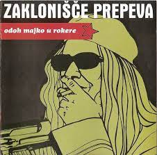
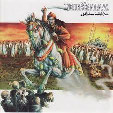
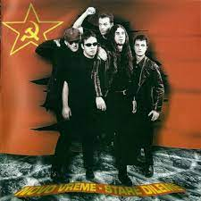